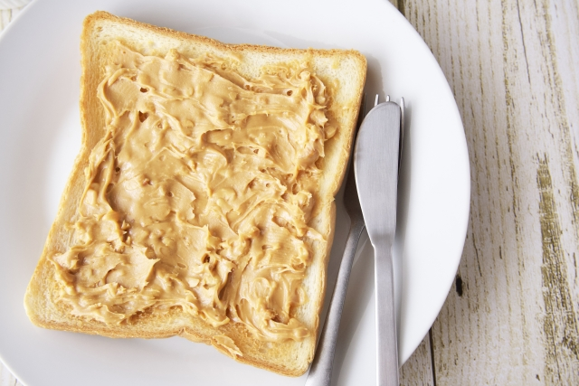

SHOPPING
生鮮食品以外のお取り扱い商品について
こちらでは通年扱う人気商品をご紹介します。ぜひ一度お試しください。
-
- 有機はちみつ
- 非加熱で仕上げた蜂の巣が少し入ったままの濃厚な味わいのはちみつ。ミネラルたっぷりのパワーフードです。
-

- 無農薬蕎麦粉
- 外皮を少し挽き込んだ香りの良い蕎麦粉。粒子が細かいので蕎麦打ちはもちろんガレットなどのお菓子作りにも最適です。
-
- 有機大豆
- ふくよかな甘みが美味しい大豆。味噌や納豆にすると格別な味わいです。
-
- 自家製キムチ
- 規格外で流通しなかった美味しいお野菜を特製レシピで漬け込みました。りんご入りのまろやかな味わいです。
-

- 自家製ピーナッツバター
- 有機ピーナッツと体に優しいきび砂糖で作った特別な一品。少し粒を残したクランチ入り。
-
- 有機梅干し
- 梅、塩、紫蘇。全てにこだわって漬けたふっくら梅干し。昔ながらのしょっぱい梅干しです。
-
- ドライフルーツ
- 規格外で流通しなかった美味しい果物ですが、ドライフルーツにするとさらに濃厚な味わいでとっても美味しい。 紅茶に入れておもてなしにもおすすめ。
-
- 農場バター
- 新鮮バターはお菓子作りも毎朝のパンにも欠かせません。市内の牧場自慢の逸品です。